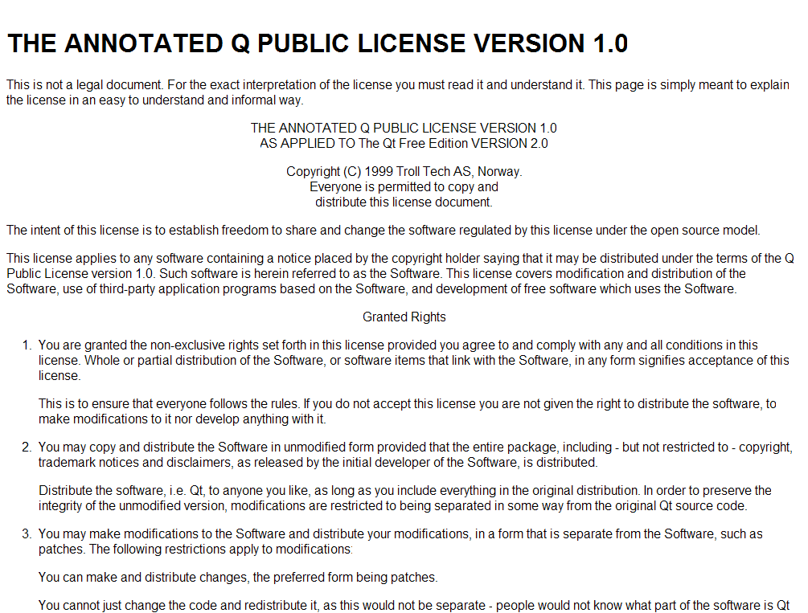

感謝您對「自由軟體鑄造場」的支持與愛護，十多年來「自由軟體鑄造場」受中央研究院支持，並在資訊科學研究所以及資訊科技創新研究中心執行，現已完成階段性的任務。 原網站預計持續維運至 2021年底，網站內容基本上不會再更動。本網站由 Denny Huang 備份封存。
也紀念我們永遠的朋友 李士傑先生（Shih-Chieh Ilya Li）。
也紀念我們永遠的朋友 李士傑先生（Shih-Chieh Ilya Li）。
Legal Column  為 Qt 量身訂做的自由開源軟體授權條款－QPL
為 Qt 量身訂做的自由開源軟體授權條款－QPL
為 Qt 量身訂做的自由開源軟體授權條款－QPL
Created at Wednesday, 09 November 2005 08:00 Last Updated on Monday, 14 May 2012 14:30
QPL-1.0 的英文全稱為 Q Public License 1.0，乃是 Trolltech 公司為主打其 Qt 專案所量身訂作的自由開源軟體授權條款（註一），Qt 專案的名稱來自於 Trolltech 公司前身的 Quasar Technologies，故 Qt 兩字實為簡寫，但亦有論者以其諧音稱為 CuTe。Qt 這個軟體專案，乃是跨平台的程式開發框架 (software development framework)，主要用途是協助軟體工程人員開發圖形化的介面程式，譬如 Linux 作業系統上有名的桌面系統 KDE (K Desktop Environment) 即為著例。
▲ 圖1 THE ANNOTATED Q PUBLIC LICENSE VERSION 1.0，2012 年 3 月 16 日截圖於右列網址之庫頁存檔：https://www.trolltech.com/licenses/qpl-annotated.html
論及 QPL-1.0 時，其中一個不能忽略的面相就是，QPL-1.0 與 Qt 軟體專案之間的緊密連結與配合。一般其他常用的自由開源軟體授權條款，如GPL、LGPL 或是 CPL 等，預設的立場都是廣域性的被採用，任何人研發自由開源軟體時，都適合套用這些授權條款來劃定權利義務關係，QPL-1.0 相對於此，卻是以 Qt 此一軟體專案及其相關程式為發展主軸，譬如 QPL-1.0 以挪威法律為準據法，及指定奧斯陸地方法院為管轄法院的規定，就是一個頗不同於其他自由開源軟體授權條款的設定。但這並不表示說，其他的自由開源軟體授權條款便不會有預設準據法及管轄法院的動作，例如 MPL-1.1 即預設加州州法為其授權條款的準據法依據，但若是再佐以 QPL-1.0 授權條款的各個細項來進行分析，則不難窺見其為 Qt 量身訂做的授權特性。
QPL-1.0 針對 Qt 設計的顯著特點有二，一是其要求修改者若是需要修改 QPL-1.0 授權程式，則必須使用添加修補檔案（註二）的方式為之，而不能直接修改該程式的原始檔案；再者、依據 Qt 授權元件所產生的修改檔案與衍生作品，即使修改之後是置於內部單純使用，Qt 程式的原始開發者 (Initial Developer) 知悉後，仍然可以依據 QPL-1.0 授權條款第 6 條 c 項的規定，要求修改者拷貝一份修改檔案的修改文件及修改內容，提供予該專案的原始開發者（註三）。
相對於其他全球性、廣域性的自由開源軟體授權條款，QPL-1.0 的最大特色在於表彰出自由開源軟體，公眾散布及商業營利模式並進的可行性，也就是說，QPL-1.0 與 Qt 及 Trolltech 公司的商業發展策略，實有密不可分的關係，Trolltech 就其 Qt 相關專案，推行的是雙重授權模式的營利模式 (Dual-Licensing Open Source Business Models)，此種模式意指，軟體程式在散布時兼採自由開源軟體授權方式及傳統的商業授權方式併行釋出，使用者可視需求選擇不收取授權金釋出的自由開源授權版本，或是付費取得商業授權版本。一般來說運作雙重授權模式的軟體專案，以自由開源軟體授權的方式可完全無償取得，但後續使用、修改，及再散布該程式時，也通常會被該授權條款所拘束，而必須沿用該授權方式來散布原程式或其衍生程式；而若是改以商業授權方式取得時，則必須預先繳付傳統上常見的軟體授權金，但後續使用該軟體的義務性規定，則悉依商業授權契約的內容所訂，而若有衍生程式、原則上也不會被要求必須以提供程式源碼的方式向後散布（註四）。
此種併採自由開源軟體授權方式及傳統商業授權方式併行釋出軟體的方式，不啻為自由開源專案的未來商業發展指出一條可能的方向，在商業利用方面，Trolltech 及透過商業授權取得服務者之間，存有個別磋商的授權文件，彼此的權利義務關係甚至服務收費的內容都可以依個案而做細部的調整；但同時亦存有不特定授權對象的自由開源軟體授權模式，後者讓個別的程式開發者可以先以無授權金的方式下載 Qt 專案進行實作開發，並可將自己的使用建議或是除錯通知回報給 Qt 專案的程式開發團隊，如此一來 Qt 專案可以實際取得商業取用者的金流資助，但同時兼顧到個人使用的公益性，並讓社群性質的開發參與者，可以透過群策群力的方式一同將此專案的成果編寫的更加完好。
從上所述、QPL-1.0 與其他自由開源軟體授權條款的最大不同處，在於其是在高度尊崇原始開發者角色與地位的架構下進行編寫的，所以依照條款規定的預設，以 QPL-1.0 釋出的程式檔案不會被後手直接修改，而專案的原始開發者，亦能夠要求參閱後手修改者原不釋出的修改資料，這樣的設計規劃，本質就是要便利該專案的原始釋出機構，一方面採用自由開源軟體的授權方式來加速專案的使用率，另一方面卻還能夠同時進行有效的版本控制。然則這樣的特殊規定其實有利亦可能有弊，Trolltech 公司採用 QPL-1.0 釋出軟體專案的風險在於，如該專案的使用率及普及率本就不高，或是在同樣功能上出現其他強勢的競爭專案，則套用 QPL-1.0 高度尊崇原始開發者的授權方式，反而有可能讓後續的社群貢獻者因而卻步。從近幾年的發展來觀察，Trolltech 公司就此議題，早已在授權策略方面進行了大幅度的調整與讓步，其在後續新版本的 Qt 專案，已不再堅持套用 QPL-1.0 來進行雙重授權，反而選用 GPL-2.0 這個使用率最高且具高度 Copyleft 特性的授權條款，來與其商業授權模式搭配，其後、Trolltech 為 Nokia 收購之後，更在 2009 年釋出的 Qt 4.5 版，改用 LGPL-2.1 授權條款，來與其商業授權模式搭配（註五）。也就是說、Qt 專案後續的授權方式，仍是採用雙重授權的商業模式，一方面與其他公司訂立個別的商業授權契約來進行收費，但同時亦服膺自由開源軟體提供程式源碼的大原則，繼續以自由開源軟體授權的方式來釋出程式源碼，讓得到程式源碼的後手及社群開發者，得以研究、修改，自行客製化該專案的開源版本。就現實面來說、QPL-1.0 授權條款的適用專案，已因 Trolltech 公司的政策調整而大幅度減少，但像 Qt 這種跨行商業授權與自由開源授權雙邊的軟體專案，其未來的發展模式及狀況確實值得加以觀注，因為也許就不同的軟體使用立場來謀求最大利益值的開發模式，也許會是未來自由開源軟體專案發展的主要應用模式之一。
註一：Trolltech 公司於 1994 年由 Eirik Chambe-Eng 及 Haavard Nord 創立，而於 2008 年為 Nokia Corporation 完全收購。
註二：修補檔案在 QPL-1.0 授權條款中的原文為「patch」一詞，簡體中文慣以「補丁」稱之。根據 Trolltech 公司的說明理由，這主要是為了維護 Qt 軟體專案的信譽程度及穩定性，故修改者如要調整 QPL-1.0 授權專案的功能，只能以撰寫修補檔案並讓其與原程式互動的方式為之，而不能直接修改以 QPL-1.0 釋出的原始檔案。
註三：依據 Trolltech 官方說明文件「THE ANNOTATED Q PUBLIC LICENSE VERSION 1.0」對於授權條款第 6 條 c 項的說明，Trolltech 此舉是為了反制部分公司，取用了 Qt 程式卻不公開分享程式源碼，如發生此種狀況，則 Trolltech 便可引用此款，要求其提供程式源碼予專案的原始開發者，再透過 Qt 的改版將這些成果添附於後續 Qt 的新版本，其英文原文引註如右：「This is to avoid problems with companies that try to hide the source. If we get to know about it we want to be able to get hold of the code even if we are not users. In this way, if somebody tries to cheat and we get to know we can release the code to the public.」
註四：關於自由開源軟體專案的雙重授權營利模式，更多的資訊請參照，林誠夏，自由開源軟體的商業應用模式（下）－雙重授權篇：https://www.openfoundry.org/tw/legal-column-list/1056-2010-07-15-10-36-02，自由軟體鑄造場電子報，第 83 期。
註五：開發團隊的相關聲明可參見右列網址：https://labs.qt.nokia.com/2009/01/14/nokia-to-license-qt-under-lgpl/。
Special


Open Source Software Foundry‧ Best Viewed with IE7.0 or Firefox2.0 above, 1024x768 Resolution. E-Mail：contact@openfoundry.org
Address：No.128, Sec.2, Academia Rd., Institute of Information Science, Academia Sinica, Nangang District, Taipei City 11529, Taiwan (R.O.C).
Privacy Policy. Terms-of-use
Address：No.128, Sec.2, Academia Rd., Institute of Information Science, Academia Sinica, Nangang District, Taipei City 11529, Taiwan (R.O.C).
Privacy Policy. Terms-of-use